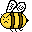
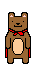
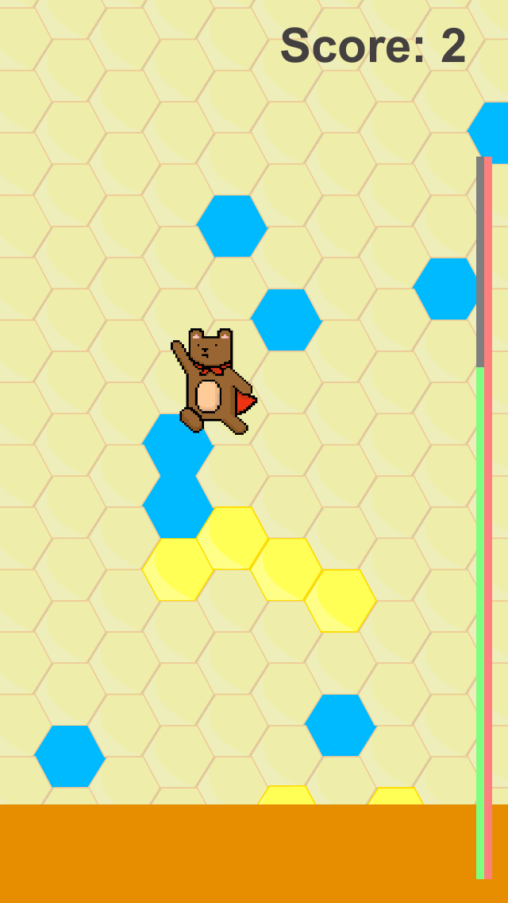
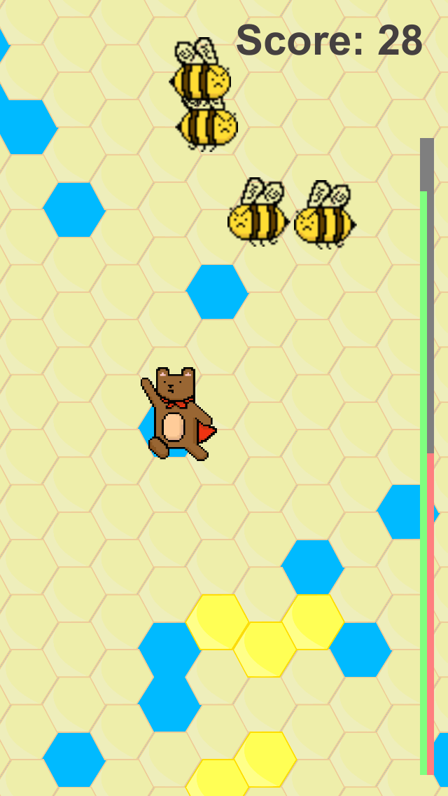

 You'd Better Bee Ready!
|  |
Meet Beartholomew Honeybottom, the greatest honeymancer this world has ever seen! Not only is his clever, powerful, and cunning, he is also unbearably cute! |
Join him on his latest excursion to collect the world's most coveted source of power - honey! Enter the Great Hive, fend off angry bees, and abscond with their precious liquid gold using your honeymancy to reach the exit.

 |
Controls
Beartholomew's honeymancy is getting out of whack! As he jumps left and right to dodge bees and reach the exit, swipe across yellow honeycombs to make a temporary platform to get his paws on. Watch out for blue gaps in the honeycombs--those are sky holes! No chance of making any platforms there.
Tips for Novice Honeymancers:
- Honeymancing power regens over time. In the meantime, conserve your energy by making more accurate platforms!
- Be on the lookout for angry bees! They'll try to knock you into the bubbling pit of honey below... not to mention those stingers hurt.
- Swimming in bees? Swat them out of your way with a tap!
Get as high a score as you can! Impress your friends (or at least us! We will be impressed)!
Platforms and Playing the Game
Honeymancer is an iOS game, best playable on mobile phones. To play, clone our repo and build an iPhone version using Unity!
History & Tech Specs
Made it down here, did you? Bless your heart.
- Honeymancer is a product of Tufts University's COMP23: Intro to Game Development, taught by Ming Chow.
- It was created by hooligans: Max Smiley and Pattra Audcharevorakul.
- Honeymancer was made in Unity2D and scripted in C#.
- Our art is hand-drawn with the aid of Pixen and a little mouse magic. Music is public domain.
|